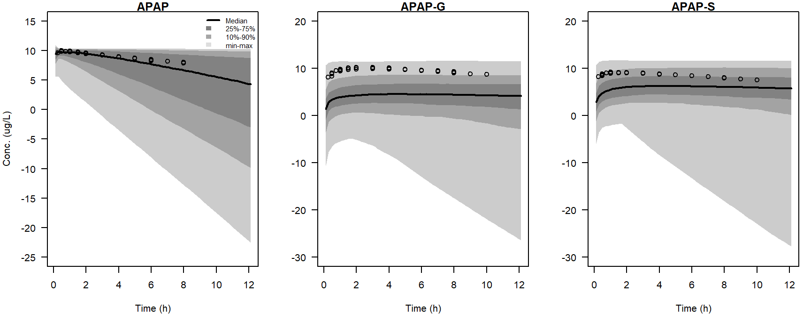
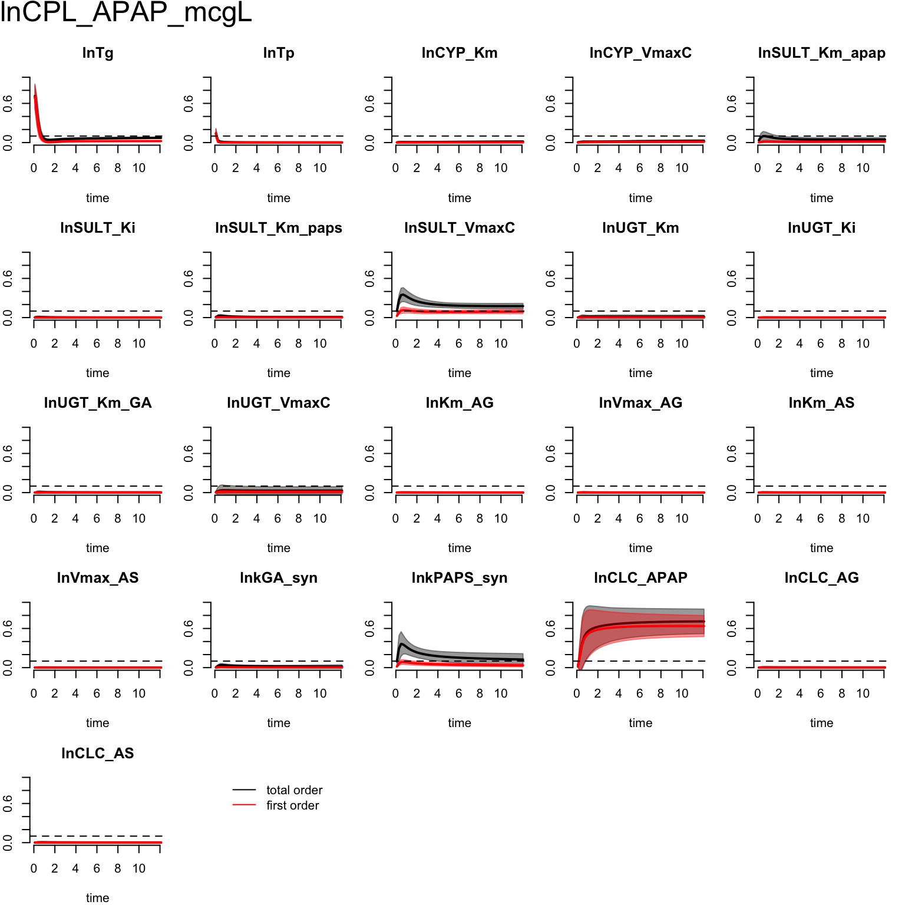
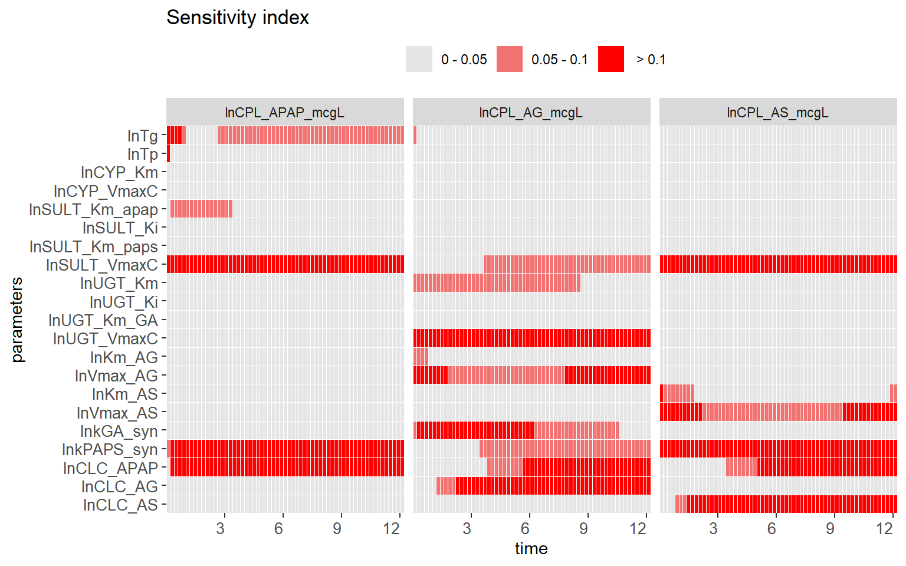
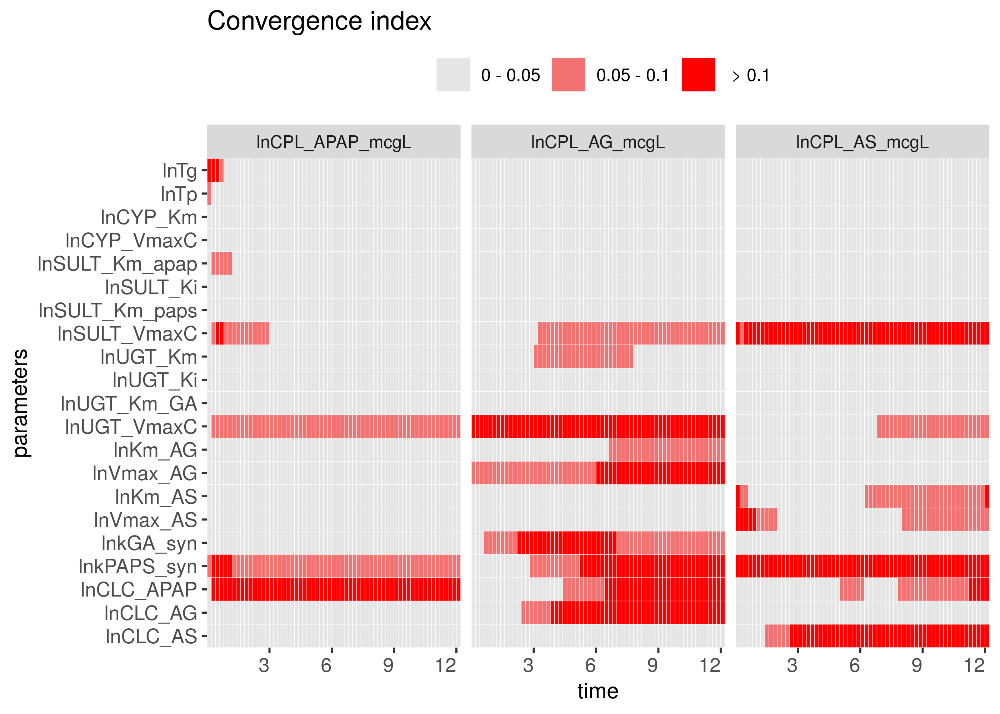

The aim of this vignette is to reproduce our previous published (Hsieh et al. 2018) result of global sensitivity analysis for acetaminophen PBPK model through pksensi. The model codes are included in this package and can be generated through pbpk_apap_model(). We applied the global sensitivity analysis workflow to the original published model with 21 model parameters (Zurlinden and Reisfeld 2016). The descriptions of each parameter and the sampling ranges are list in Table 1.
mcsim_install(mxstep = 5000) # Be sure to set the mxstep to 5000
| Parameter | Description | Unit | Min | Max |
|---|---|---|---|---|
| Tg | Gatric emptying time constant | \(h\) | -3.430 | 0.490 |
| Tp | GI perfusion time constant | \(h\) | -5.371 | -1.451 |
| CYP_Km | Cytochrome P450 metabolism, Km | \(\mu{M}\) | 3.000 | 7.000 |
| CYP_VmaxC | Cytochrome P450 metabolism, VMax | \(\mu{mole}/h\cdot{BW}^{0.75}\) | -1.966 | 7.972 |
| SULT_Km_apap | Sulfation pathway acetaminophen, Km | \(\mu{M}\) | 3.744 | 7.664 |
| SULT_Ki | Sulfation pathway substrate inhibition, Ki | \(\mu{M}\) | 4.305 | 8.225 |
| SULT_Km_paps | Sulfation pathway PAPS, Km | \(-\) | -3.000 | 1.000 |
| SULT_VmaxC | Sulfation pathway acetaminophen, Vmax | \(\mu{mole}/h\cdot{BW}^{0.75}\) | 0.000 | 10.000 |
| UGT_Km | Glucronidation pathway acetaminophen, Km | \(\mu{M}\) | 6.740 | 10.660 |
| UGT_Ki | Glucronidation pathway substrate inhibition, Ki | \(\mu{M}\) | 9.008 | 12.928 |
| UGT_Km_GA | Glucronidation pathway GA, Km | \(-\) | -3.000 | 1.000 |
| UGT_VmaxC | Glucronidation pathway acetaminophen, Vmax | \(\mu{mole}/h\cdot{BW}^{0.75}\) | 0.000 | 10.000 |
| Km_AG | APAP-G hepatic transporter, Km | \(\mu{M}\) | 7.938 | 11.858 |
| Vmax_AG | APAP-G hepatic transporter, Vmax | \(\mu{mole}/h\) | 6.994 | 14.997 |
| Km_AS | APAP-S hepatic transporter, Km | \(\mu{M}\) | 8.000 | 12.000 |
| Vmax_AS | APAP-S hepatic transporter, Vmax | \(\mu{mole}/h\) | 6.994 | 14.997 |
| kGA_syn | UDPGA synthesis | \(1/h\) | 0.000 | 13.001 |
| PAPS_syn | PAPS synthesis | \(1/h\) | 0.000 | 13.001 |
| CLC_APAP | APAP clearance | \(L/h\cdot{BW}^{0.75}\) | -5.999 | 1.000 |
| CLC_AG | APAP-G clearance | \(L/h\cdot{BW}^{0.75}\) | -5.999 | 1.000 |
| CLC_AS | APAP-S clearance | \(L/h\cdot{BW}^{0.75}\) | -5.999 | 1.000 |
Same as the example of one-compartment PK model. The model parameter and the corresponding sampling range should be defined to create the parameter matrix. Previously, the probability distributions of model parameters were set to either truncated normal or uniform distribution when the parameters have informative prior information or not. To rapidly reach the acceptance convergence, we apply uniform distribution for all testing parameters. The ranges of informative parameters are set to 1.96-times difference for single side under log-scaled (approximate 54.6 times difference between minimum and maximum in natural scaled). The nominal values of informative model parameters were defined as:
# Nominal value Tg <- log(0.23) Tp <- log(0.033) CYP_Km <- log(130) SULT_Km_apap <- log(300) SULT_Ki <- log(526) SULT_Km_paps <- log(0.5) UGT_Km <- log(6.0e3) UGT_Ki <- log(5.8e4) UGT_Km_GA <-log(0.5) Km_AG <- log(1.99e4) Km_AS <- log(2.29e4) rng <- 1.96
Generally, wide range of parameter value might cause the computing error when solving the differential equation. One of the effective ways to prevent this problem is to adjust the value of relative and absolute error tolerance to control the error appearance by resetting these parameters in a lower value. The generate_infile() and solve_mcsim() provide the arguments of rtol and atol that adjust the error tolerance to prevent the unwanted error. However, the modification will decrease the computing speed. Therefore, the alternative method to prevent this issue is to detect the crucial parameter range that causes the problem. Also, setting the maximum number of steps to higher value instead of using the default value (500) in GNU MCSim can prevent this problem (internally defined). The maximum number of step is set to 5000 in this case. Here we separate the global SA of APAP-PBPK model process to several steps.
The model code needs to be prepared in the following global SA workflow. After creating the pbpk_apap.model file in the working directory, the next step is to generate the executable program (mcsim.pbpk_apap) through compile_model() function.
mName <- "pbpk_apap" pbpk_apap_model()
#> [1] TRUEcompile_model(mName, application = "mcsim")
#> * Created executable file 'mcsim.pbpk_apap'.The 21 testing model parameters are defined in this part, including parameter name, probability distribution, and distributed parameter value. To prevent the computing error, the range of SULT_VmaxC and UGT_VmaxC need to adjust from \(U(0, 15)\) (Zurlinden and Reisfeld 2016) to \(U(0, 10)\) (Hsieh et al. 2018). The objects q and dist are set to the type of distribution that will use to generate the parameter matrix in GNU MCSim (for uncertainty analysis) and R (for SA).
params <- c("lnTg", "lnTp", "lnCYP_Km","lnCYP_VmaxC", "lnSULT_Km_apap","lnSULT_Ki","lnSULT_Km_paps","lnSULT_VmaxC", "lnUGT_Km","lnUGT_Ki","lnUGT_Km_GA","lnUGT_VmaxC", "lnKm_AG","lnVmax_AG","lnKm_AS","lnVmax_AS", "lnkGA_syn","lnkPAPS_syn", "lnCLC_APAP","lnCLC_AG","lnCLC_AS") dist <- rep("Uniform", 21) q <- rep("qunif", 21) q.arg <-list(list(Tg-rng, Tg+rng), list(Tp-rng, Tp+rng), list(CYP_Km-rng, CYP_Km+rng), list(-2., 5.), list(SULT_Km_apap-rng, SULT_Km_apap+rng), list(SULT_Ki-rng, SULT_Ki+rng), list(SULT_Km_paps-rng, SULT_Km_paps+rng), list(0, 10), list(UGT_Km-rng, UGT_Km+rng), list(UGT_Ki-rng, UGT_Ki+rng), list(UGT_Km_GA-rng, UGT_Km_GA+rng), list(0, 10), list(Km_AG-rng, Km_AG+rng), list(7., 15), list(Km_AS-rng, Km_AS+rng), list(7., 15), list(0., 13), list(0., 13), list(-6., 1), list(-6., 1), list(-6., 1))
To optimize the computing speed, this case only uses GNU MCSim to estimate the concentration of APAP and its metabolites glucuronide (APAP-G) and sulfate (APAP-S) in plasma. The setting oral dose of APAP is 20 mg/kg in this example. Generally, the input dosing method can be defined through the condition argument. Since the unit of the given dose is mg/kg, the mgkg_flag is set to 1. More definition of input schedule functions can be found in the section of input functions in GNU MCSim User’s Manual (https://www.gnu.org/software/mcsim/mcsim.html#Input-functions).
We apply uncertainty analysis through the solve_mcsim() and visualize the result by pksim() function. Some example data are included in the pksensi with experiment time (h) and concentration (mg/L).
head(APAP)
#> Wt Time APAP AG AS Study Dose
#> 1 72 0.25 15.50007 3.204143 3.548570 Prescott_1980 20
#> 2 72 0.50 18.70040 7.945810 6.745292 Prescott_1980 20
#> 3 72 0.75 18.79977 13.422665 8.214039 Prescott_1980 20
#> 4 72 1.00 17.99951 18.142273 9.559589 Prescott_1980 20
#> 5 72 1.50 15.59959 24.681272 9.345965 Prescott_1980 20
#> 6 72 2.00 13.59966 27.279751 8.779722 Prescott_1980 20In the setting condition of simulation, The relative and absolute error tolerance (rtol & atol) were set to 1e-7 and 1e-9, respectively, to prevent the computing error. The Monte Carlo simulation is run for 1000 iteration as the assignment of monte_carlo. The input file (‘sim.in’) and output file (‘simmc.out’) will be generated under the standard ASCII format.
set.seed(1111) out <- solve_mcsim(mName = mName, params = params, vars = vars, monte_carlo = 1000, dist = dist, q.arg = q.arg, time = times, condition = conditions, rtol = 1e-7, atol = 1e-9)
#> Starting time: 2020-06-15 16:57:04#> * Created input file "sim.in".#> Execute: ./mcsim.pbpk_apap sim.in#> Ending time: 2020-06-15 16:57:06par(mfrow = c(1,3), mar = c(4,4,1,1)) pksim(out, xlab = "Time (h)", ylab = "Conc. (ug/L)", main = "APAP") points(APAP$Time, log(APAP$APAP * 1000)) pksim(out, vars = "lnCPL_AG_mcgL", xlab = "Time (h)", main = "APAP-G", ylab = " ", legend = FALSE) points(APAP$Time, log(APAP$AG * 1000)) pksim(out, vars = "lnCPL_AS_mcgL", xlab = "Time (h)", main = "APAP-S", ylab = " ", legend = FALSE) points(APAP$Time, log(APAP$AS * 1000))

Here shows the coverage checks of prior PBPK model predictions with calibrated APAP data. For parent compound, all data points are located in the simulated interval of 25-75%. Through this result, we can determine that the simulated outputs can accurately generate the same concentration profile as the in-vivo experiment under the setting of parameter ranges for APAP. The simulated result of metabolites APAP-G shows the different pharmacokinetic profile with experiment data. However, all data points are located in the simulated interval.
In global SA, we have to additionally generate the parameter matrix from the eFAST method. The current setting uses 512 sample size with 10 replication.
To conduct the global SA with GNU MCSim and pksensi, the input file with given “setpoint” condition should be generated before modeling. The file can create by generate_infile function. The solve_mcsim can also automatically create the input file and compute the output.
out <- solve_mcsim(x, mName = mName, params = params, time = times, vars = vars, condition = conditions, rtol = 1e-7, atol = 1e-9)
#> Starting time: 2020-06-15 16:57:07#> * Created input file "sim.in".#> Execute: ./mcsim.pbpk_apap sim.in#> Ending time: 2020-06-15 17:00:12The plotting function can create the result of time-dependent sensitivity measurement to determine the parameter impact on model output over time.
plot(out, vars = "lnCPL_APAP_mcgL")

In addition, through using the check, the parameter with sensitivity and convergence indices over the given condition can be preliminary detected for all output variables. Based on our previous study, we proposed the heatmap visualization approach heat_check to distinguish “influential” and “non-influential” parameters with a “cut-off” point. Through the given argument order, we can select the specific order of sensitivity measurement that we’re interested in.
heat_check(out, order = "total order", show.all = T)

In the default setting, the heat_check can only show the influential parameters. The argument show.all is used to show all results. Adding the index = "CI" in the function can further investigate the convergence index. Based on the current setting of sampling size, most parameters cannot reach the acceptable criteria of convergence. Therefore, a higher number of sampling is necessary. The sample size of convergence in the current PBPK model is 8,192 (Hsieh et al. 2018). However, based on the current sample size we still can find 6 parameters that can be an important parameter for the plasma APAP concentration.
heat_check(out, index = "CI", order = "total order")

Hsieh, Nan-Hung, Brad Reisfeld, Frederic Y. Bois, and Weihsueh A. Chiu. 2018. “Applying a Global Sensitivity Analysis Workflow to Improve the Computational Efficiencies in Physiologically-Based Pharmacokinetic Modeling.” Frontiers in Pharmacology 9: 588. https://doi.org/10.3389/fphar.2018.00588.
Zurlinden, Todd J., and Brad Reisfeld. 2016. “Physiologically Based Modeling of the Pharmacokinetics of Acetaminophen and Its Major Metabolites in Humans Using a Bayesian Population Approach.” European Journal of Drug Metabolism and Pharmacokinetics 41: 267–80. https://doi.org/10.1007/s13318-015-0253-x.